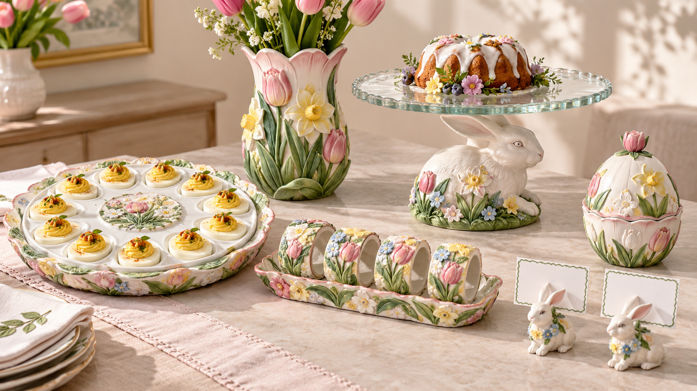
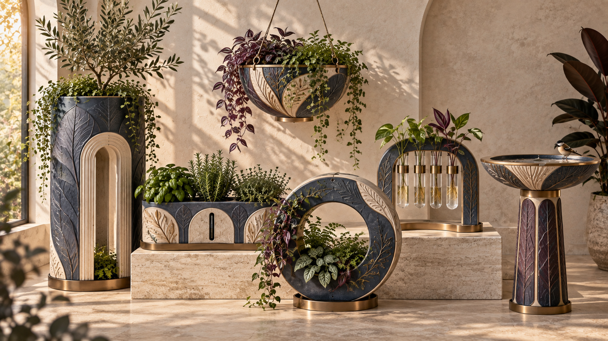
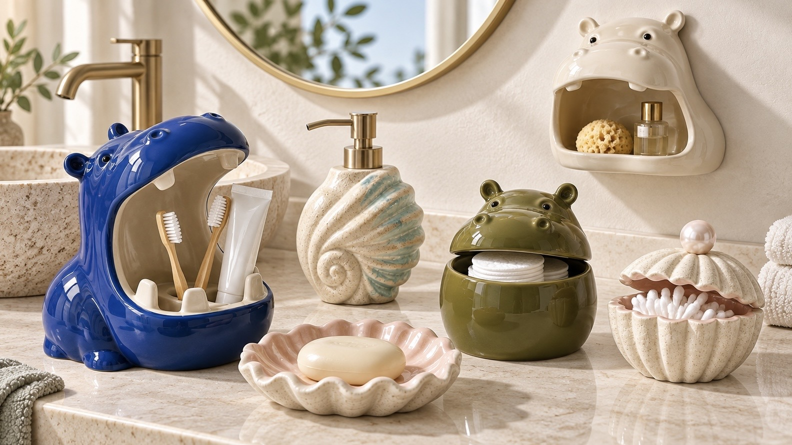

Home & desktop décor
Sculptures, figurines, vases, candleholders, trays, desk organisers and decorative accents.
Product categories & materials
Collections for the home, desk, garden and the spaces people care for. Source a direction, adapt a design or develop something original.
Explore our capabilities ↗Home & desktop décor
Crafts, gifts & collectibles Aquarium & reptile décor
Aquarium & reptile décor
Garden décor & planters
Bathroom accessories & storage Lifestyle & seasonal
Lifestyle & seasonal01 / Explore by use
Ceramic, resin, wood, textile and ironwork, selected around the form, function, price and intended use.
Sculptures, figurines, vases, candleholders, trays, desk organisers and decorative accents.
Hand-finished crafts, giftware, character figurines and collectible decorative pieces.
Aquarium ornaments, terrarium hides, decorative caves, rock forms and habitat accessories.
Garden ornaments, balcony accents, plant pots, decorative planters, stands and outdoor accessories.
Bathroom organisers, soap dishes, dispensers, toothbrush holders and countertop storage.
Decorative organisers, seasonal decorations, holiday gift sets and everyday design objects.
These are development and sourcing capabilities, rather than a live stock catalogue. Original designs and commercial details are discussed privately.
02 / Develop a direction
Sculptures, figurines, vases, candleholders, trays and desktop accents.
Start this category brief ↗A reference or sketch, proposed quantity, target buy / retail price, finish, dimensions, packaging and launch timing.
Tooling, minimum order quantity, sample cost and lead time are confirmed after reviewing the product and process.
03 / Materials & processes
Forming, glazing, painted detail and surface textures for decorative and functional pieces.
Sculpted forms, moulded detail, hand painting and finishes for giftware and decorative objects.
Cutting, carving, assembly, staining and painted finishes for accessories and decorative structures.
Fabric selection, cutting, sewing and soft finishes for lifestyle, storage and seasonal collections.
Forming, welding, assembly and protective finishes for stands, ornaments and mixed-material pieces.
Custom / OEM · ODM · Private label
Shape, dimensions, colour, material, finish and packaging can be developed around your brief.
Reference → concept / 3D → prototype → sample review → production preparation.
Prepare a product brief ↗See our manufacturing approach ↗